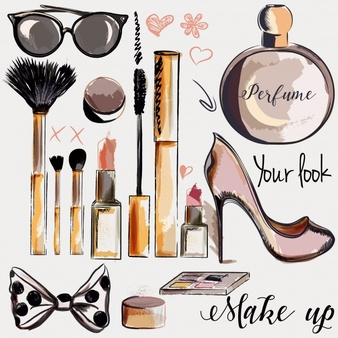

For the longest time, I was jet-setting around the country enhancing the faces of some truly incredible people. But as a defunct journalist turned makeup artist, I’ve always wanted an outlet that would enable me to express my inner Joan Didion while continuing to obsess over how to harmoniously blend a charcoal smokey eye with the perfect Charlotte Tilbury Hot Lip Lipstick.
